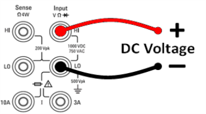
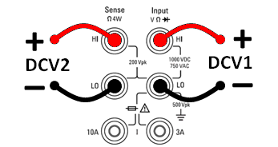

This section describes how to configure DC voltage measurements from the front panel, including DCV ratio measurements.
Step 1: Configure the test leads as shown.

Step 2: Press [DCV] on the front panel.
Step 3:
Step 4:Press Range to select a range for the measurement. You can also use the [+], [-], and [Range] keys on the front panel to select the range. (Auto (autorange) automatically selects the range for the measurement based on the input. Autoranging is convenient, but it results in slower measurements than using a manual range. Autoranging goes up a range at 120% of the present range, and down a range below 10% of the present range.
Step 5: Auto Zero: Autozero provides the most accurate measurements, but requires additional time to perform the zero measurement.With autozero enabled (On), the DMM internally measures the offset following each measurement. It then subtracts that measurement from the preceding reading. This prevents offset voltages present on the DMM’s input circuitry from affecting measurement accuracy. With autozero disabled (Off), the DMM measures the offset once and subtracts the offset from all subsequent measurements. The DMM takes a new offset measurement each time you change the function, range, or integration time. ( There is no autozero setting for 4-wire measurements.)
Step 6: Specify the input impedance to the test leads (Input Z). This specifies the measurement terminal input impedance, which is either Auto or 10 MΩ. The Auto mode selects high impedance (HighZ) for the 100 mV, 1 V and 10 V ranges, and 10 MΩ for the 100 V and 1000 V ranges. In most situations, 10 MΩ is high enough to not load most circuits, but low enough to make readings stable for high impedance circuits. It also leads to readings with less noise than the HighZ option, which is included for situations where the 10 MΩ load is significant.
The DCV Ratio key enables or disables DCV Ratio measurement. Note that the Auto Zero softkey disappears when you enable DCV Ratio measurements. This is because autozero cannot be disabled during DCV Ratio.
The ratio is the voltage on the Input terminals divided by the reference voltage. The reference voltage is the difference of two separate measurements. These measurements are the DC voltages from the HI Sense terminal to the LO Input terminal and from the LO Sense terminal to the LO Input terminal. These two measurements must be within the range of ±12 VDC. The reference voltage is always autoranged, and the range used for both will be based on the larger result of these two measurements.
Configure DCV Ratio measurements as shown:
